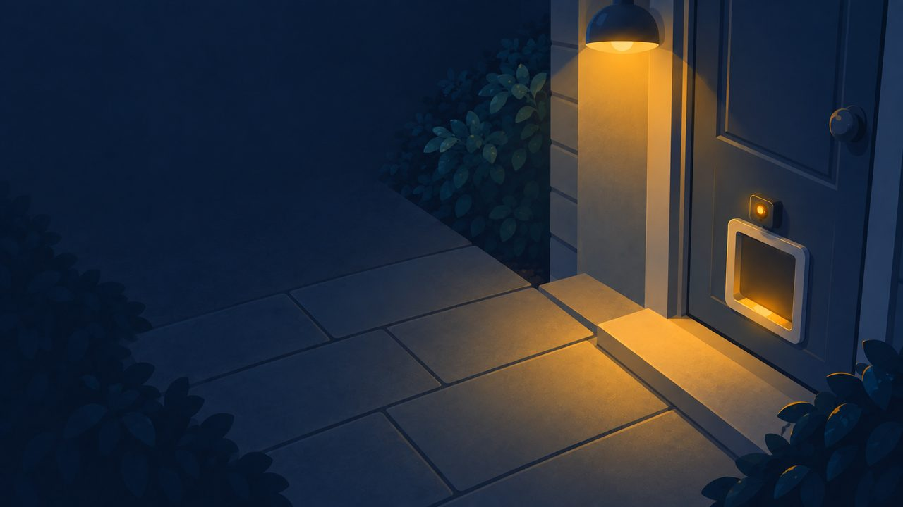

Die Nachtklappe
Du bist die Katzenklappe. Dein Kater Metric kommt nachts nach Hause – und manchmal bringt er etwas mit.
So funktioniert es
Über der Klappe hängt eine kleine Kamera. Jedes Mal, wenn Metric kommt, siehst du ihr Bild – nachts, unscharf, manchmal verregnet. Du entscheidest in wenigen Sekunden: Öffnen oder 15 Minuten sperren. Wenn er eine Maus oder einen Vogel im Maul hat, willst du das nicht im Schlafzimmer haben. Wenn er nur ein Blatt trägt, willst du ihn nicht im Regen sitzen lassen.
Drei Nächte, jeweils 18 Besuche. Du sammelst Punkte. Am Ende bekommst du eine Auswertung – und eine Frage.
Eine ruhige Nacht
Drei Nächte, Punkte.
Bevor wir über Punkte reden: Schau dir an, wie du entschieden hast. Jede Nacht lässt sich in vier Kästchen sortieren.
Zwei Zahlen pro Nacht – und dein Punkt auf der Kurve
Sperren mit Beute im Maul: Trefferrate. Sperren ohne Beute: Falsch-Alarm-Rate. Jede Nacht ergibt aus den beiden Zahlen einen Punkt.
| Nacht | Treffer | F.-Alarm | Trennschärfe | Kriterium |
|---|
Trennschärfe: Wie gut konntest du Beute von Nicht-Beute unterscheiden (je höher, desto weiter liegt dein Punkt oben links). Kriterium: Wie leicht hast du gesperrt (unter 0 = eher sperren, über 0 = eher öffnen).
Wo steckt die Vorlesung?
Du hast gerade drei Dinge gemacht, die einen Namen haben. Erstens: Du hast unter Rauschen entschieden – Maus und Spielzeugmaus überlappen, wenn das Bild schlecht ist. Zweitens: Du hattest zwei Regler – die Kamera (wie weit die Hügel auseinanderliegen) und deine eigene Vorsicht (wo die Linie steht). Drittens: Regen und Jagdsaison haben nicht die Kamera verändert, sondern die Kosten und die Basisrate – und damit die Linie.
Vergleiche deine Kriteriumswerte oben: Hast du im Regen die Linie verschoben? Und in der Jagdsaison? Bring die Antwort mit in die nächste Sitzung.
Dein Ergebnis-Code (zum Einreichen, anonym):
Vorbild aus der Wirklichkeit: Ben Hamm baute 2019 eine KI-Katzenklappe, die seinen Kater Metric aussperrt, wenn er Beute mitbringt – bewusst lieber einmal zu oft. · Allgemeine Psychologie I